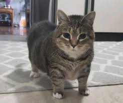
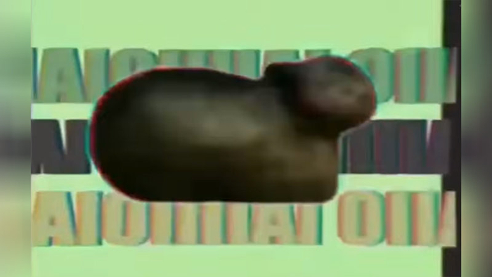

Oiiai Cat | 2023
Press the picture!
What is Oiiai Cat?
This OIIAI cat is a cat spinning to a music (sometimes is remixed) with the lyric of "OIIAI OIIAI". The song is from a screen recording of Turkish TikToker @dr.frex vocalized a song in the style of the game at different speeds. The sound was then very sped-up making it sound like OIIAI.

